d3js
a short introduction
Data based documents

Getting tired of creating regular documents manually? Copy and pasting the same tags over and over again, just to fill your webpage with content?
We have all been there. It might be a great excercise for beginners to understand, how web technologies work, but what if there was an easier and more elegant way?

The content of data-driven-documents (d3) is not defined by markup-text.
Instead you define rules how the interpreted data affects the final document.
Often libraries can even manipulate the pages content dynamically, in response to
changes in underlaying data.
d3js
d3.js is a library for manipulating documents based on data.
Documents in this context mean html-documents, used for manipulating the DOM.
Unlike similar DOM-manipulating libraries, it's main purpose is data-visualization and document-content
creation with strong connection to dynamic data.
d3.js enables automatically (re-)rendering elements in your document, based on the data it is linked to.
- select()Selects the first element that matches the specified selector.
- selectAll()Selects all elements (in document order) that match the specified selector.
- data()Binds the data to the items selected before.
- enter()The enter selection is used to create missing elements corresponding to the data.
- append()Creates a new html-element for each selected item.
- text()Sets the text content to given value of all selected elements.
This short code-snippet to the right already demonstrates, that with d3.js the document content
primarly depends on input-data.

market
According to the website trends.builtwith.com
d3js is the biggest player when it comes to javascript charting libraries.
Unlike jQuery and native DOM-APIS it is not used for dynamically adding new input elements.
Instead it's focus is clearly on building charts and customized data-visualizations.
In comparison to other javascript libraries/frameworks it is not widley used,
due to its rather specific use-case. According to similartech.com
d3js ranks at place 29 of the most used javascript technologies. The learning curve for d3js is high as it requires an
understanding of its coding complexity.
For example: while you need up to 100-120 lines of code in d3js to build a chart,
you can achieve the same kind of chart with only 10-15 lines using chart.js.
more details about the market share
self implemented examples
let barChartSVG = d3.select("body").select("#barChartContainer")
.append("svg")
.attr("width", barChartWidth)
.attr("height", barChartHeight)
.attr("viewbox", "0 0 200
barChartSVG.selectAll("rect")
.data(dataset)
.enter()
.append("rect")
.attr("x", function(d, i){ return i*60 })
.attr("y", function(d){ return barChartHeight - d })
.attr("width", 50)
.attr("height", function(d) { return d })
.attr("fill", "#0082b4")
.attr("opacity", 0.5);
This example is a basic introduction to d3js.
It shows how DOM-elements are selected and how SVG-Elements
get appended.
D3js can be used to render simple linecharts. However keep in mind
that you can also use other libraries which provide functionalities to plot
standard-charts in an easier and more straight-forward way.
For this Chart you need approximately three times more lines of code
than with the often used library ChartJs.
let data = {"name" : "SE", "children" : [
{"name" : "1. Sem", "children" : [
{"name" : "LGI","children": [
{"name" : "VO"},
{"name" : "UE"},
]},
{"name" : "ADE", "children": [
{"name" : "VO"},
{"name" : "UE"},
]},
{"name" : "EIR", "children": [
{"name" : "VO"},
{"name" : "UE"},
]},
{"name" : "OS" },
{"name" : "SWE", "children": [
{"name" : "VO"},
{"name" : "UE"},
]},
{"name" : "BWL" },
{"name" : "Englisch" },
{"name" : "Teambuilding" },
] }
.
.
.
D3js contains many different layouts, that are build in to the library itself
and are used to facilitate the conversion of data to display. The tree-layout
is one of them and is technically an object and a function, meaning that you
can use methods to change its behaviour. Like other classes in d3js we can use
method chaining to build the layout our data defines.
public examples
Research in the web (blogs, yt-tutorials) shows that a common approach of using d3js is copying
public examples and customize them for your use-case-specific requirements.
A good place to look for inspirations and outstanding d3js projects is the
observablehq d3 example gallery.
Observable is a plattform to share data-science documents and collaborate on
projects with team members.
Always make sure to check for copyright claims and licenses, before embedding public examples in your own project.
lessons learned

d3js provides a lot of tools to query data and a wide variety of possibilities to render
fascinating diagrams from any given data.
However, it is not very intuitive und sometimes poorly documented given its popularity.
In our opinion using other libraries to build some simple diagrams (trend-lines, bar-charts, ...)
might be a better option. For achieving a very specific look or custom features in your
data based document, d3js is the way to go.
For webdevelopment beginners we highly suggest to take a look in the documentation
of the simpler charting library, called Chart.js.
See the docs of Chart.js
about us

Christian Pichler is studying Software-Engineering since 2021 at the Unviversity of applied Sciences Campus Hagenberg.
Since he is working as a sign language interpreter it was very exciting finishing his very first web development project.
Maximilian Burger is a fellow student of Christian and also inexperienced in the field of web development.
Professionally he is working with .NET and mechatronic systems.